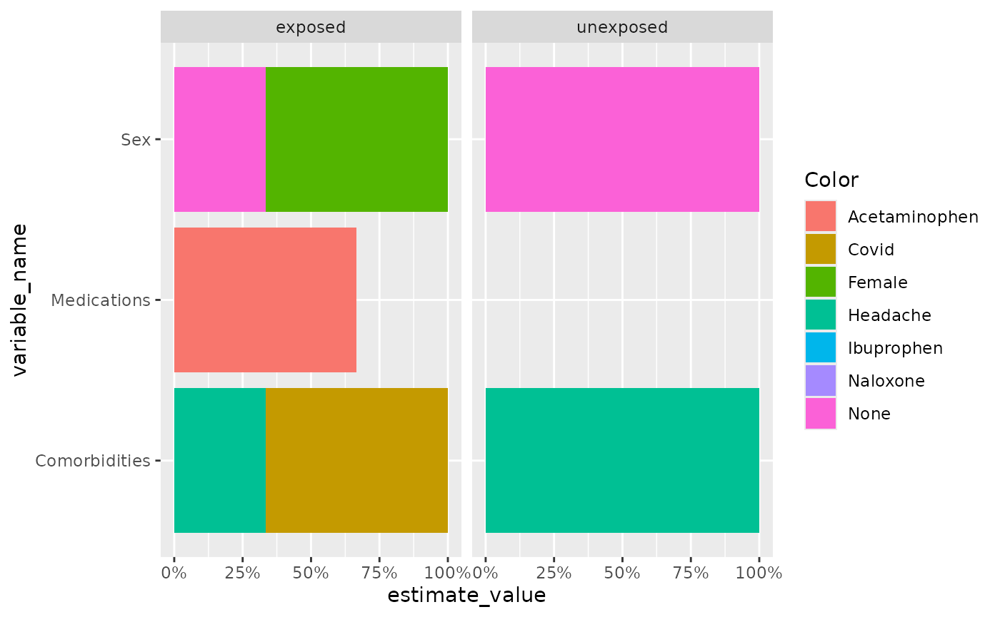
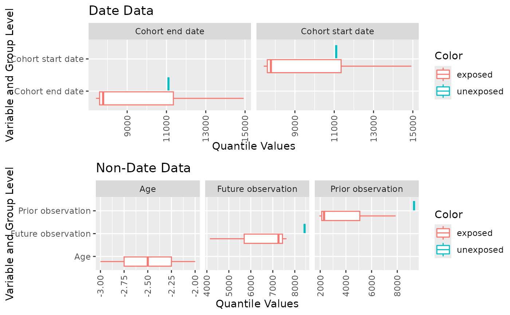

Summarise patient characteristics
Source:vignettes/a06_summarisePatientCharacteristics.Rmd
a06_summarisePatientCharacteristics.RmdCharacteristics plots
plotCharacteristics can plot the
summariseCharacteristics results, with boxplot or barplot. First we
create a mock data.
observation_period <- dplyr::tibble(
observation_period_id = c(1, 2, 3),
person_id = c(1, 2, 3),
observation_period_start_date = as.Date(c(
"1985-01-01", "1989-04-29", "1974-12-03"
)),
observation_period_end_date = as.Date(c(
"2011-03-04", "2022-03-14", "2023-07-10"
)),
period_type_concept_id = 0
)
dus_cohort <- dplyr::tibble(
cohort_definition_id = c(1, 1, 1, 2),
subject_id = c(1, 1, 2, 3),
cohort_start_date = as.Date(c(
"1990-04-19", "1991-04-19", "2010-11-14", "2000-05-25"
)),
cohort_end_date = as.Date(c(
"1990-04-19", "1991-04-19", "2010-11-14", "2000-05-25"
))
)
comorbidities <- dplyr::tibble(
cohort_definition_id = c(1, 2, 2, 1),
subject_id = c(1, 1, 3, 3),
cohort_start_date = as.Date(c(
"1990-01-01", "1990-06-01", "2000-01-01", "2000-06-01"
)),
cohort_end_date = as.Date(c(
"1990-01-01", "1990-06-01", "2000-01-01", "2000-06-01"
))
)
medication <- dplyr::tibble(
cohort_definition_id = c(1, 1, 2, 1),
subject_id = c(1, 1, 2, 3),
cohort_start_date = as.Date(c(
"1990-02-01", "1990-08-01", "2009-01-01", "1995-06-01"
)),
cohort_end_date = as.Date(c(
"1990-02-01", "1990-08-01", "2009-01-01", "1995-06-01"
))
)
emptyCohort <- dplyr::tibble(
cohort_definition_id = numeric(),
subject_id = numeric(),
cohort_start_date = as.Date(character()),
cohort_end_date = as.Date(character())
)
cdm <- mockPatientProfiles(
dus_cohort = dus_cohort, cohort1 = emptyCohort,
cohort2 = emptyCohort, observation_period = observation_period,
comorbidities = comorbidities, medication = medication
)
cdm$dus_cohort <- omopgenerics::newCohortTable(
table = cdm$dus_cohort, cohortSetRef = dplyr::tibble(
cohort_definition_id = c(1, 2), cohort_name = c("exposed", "unexposed")
)
)
cdm$comorbidities <- omopgenerics::newCohortTable(
table = cdm$comorbidities, cohortSetRef = dplyr::tibble(
cohort_definition_id = c(1, 2), cohort_name = c("covid", "headache")
)
)
cdm$medication <- omopgenerics::newCohortTable(
table = cdm$medication,
cohortSetRef = dplyr::tibble(
cohort_definition_id = c(1, 2, 3),
cohort_name = c("acetaminophen", "ibuprophen", "naloxone")
),
cohortAttritionRef = NULL
)
characteristicsResult <- summariseCharacteristics(
cdm$dus_cohort,
cohortIntersect = list(
"Medications" = list(
targetCohortTable = "medication", value = "flag", window = c(-365, 0)
), "Comorbidities" = list(
targetCohortTable = "comorbidities", value = "flag", window = c(-Inf, 0)
)
)
)
#> ℹ adding demographics columns
#> ℹ adding cohort intersect columns for table: medication
#> ℹ adding cohort intersect columns for table: comorbidities
#> ℹ summarising data
#> Warning: There were 2 warnings in `dplyr::summarise()`.
#> The first warning was:
#> ℹ In argument: `dplyr::across(...)`.
#> ℹ In group 2: `strata_id = 2`.
#> Caused by warning in `base::min()`:
#> ! no non-missing arguments to min; returning Inf
#> ℹ Run `dplyr::last_dplyr_warnings()` to see the 1 remaining warning.
#> ✔ summariseCharacteristics finished!Now we show barplot example by setting plotStyle = “barplot” in
plotCharacteristics. Similar to previous function, user can
define axes, facetVars and colorVars. Currently, barplot is only
plotting percentage.
plotCharacteristics(
data = characteristicsResult,
xAxis = "estimate_value",
yAxis = "variable_name",
plotStyle = "barplot",
facetVars = c("group_level"),
colorVars = c("variable_name", "variable_level")
)
User can plot boxplot based on q25 q75 median min max in data, using
plotCharacteristics and set plotStyle = “boxplot”. Boxplot
will be horizontal if the xAxis is set to estimate_value, and vertical
if yAxis is set to estimate_value. But for all the plots, at least one
of the xAxis or yAxis has to be estimate_value.
plotCharacteristics(
data = characteristicsResult,
xAxis = "estimate_value",
yAxis = "variable_name",
plotStyle = "boxplot",
facetVars = "variable_name",
colorVars = c("group_level")
)
#> Warning: Removed 2 rows containing missing values or values outside the scale range
#> (`geom_segment()`).
#> Warning: Removed 1 row containing missing values or values outside the scale range
#> (`geom_segment()`).
#> Warning: Removed 2 rows containing missing values or values outside the scale range
#> (`geom_segment()`).
#> Warning: Removed 1 row containing missing values or values outside the scale range
#> (`geom_segment()`).